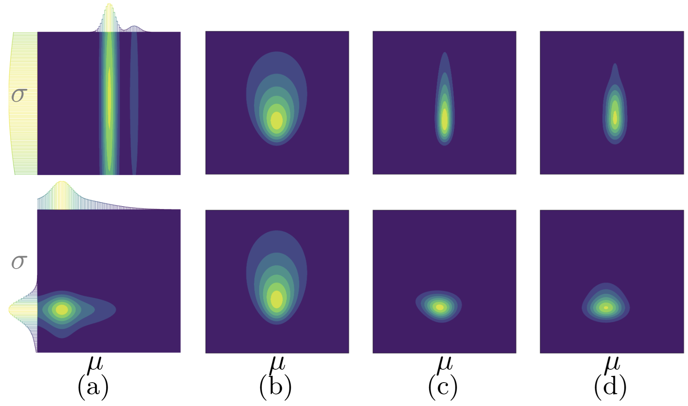
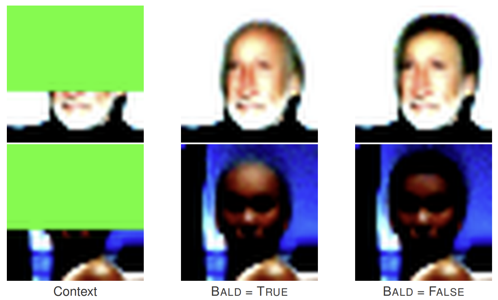

We introduce the Amortized Conditioning Engine (ACE), a transformer-based meta-learning model that enables flexible probabilistic conditioning and prediction for machine learning tasks. ACE can condition on both observed data and latent variables, include priors at runtime, and output predictive distributions for both data and latents. This general framework unifies and simplifies diverse ML tasks like image completion, Bayesian optimization, and simulation-based inference.
Amortization, or pre-training, is a crucial technique for improving computational efficiency and generalization across many machine learning tasks. This paper capitalizes on the observation that many machine learning problems reduce to predicting data and task-relevant latent variables after conditioning on other data and latents. Moreover, in many scenarios, the user has exact or probabilistic information (priors) about task-relevant variables that they would like to leverage, but incorporating such prior knowledge is challenging and often requires dedicated, expensive solutions.
Consider Bayesian optimization (BO), where the goal is to find the location $\mathbf{x}_{\text{opt}}$ and value $y_{\text{opt}}$ of the global minimum of a function. These are latent variables, distinct from the observed data $\mathcal{D}_{N}$ consisting of function values at queried locations. Following information-theoretical principles, we should query points that would reduce uncertainty about the latent optimum, but predictive distributions over these latents are intractable, leading to complex approximation techniques.

We address these challenges by introducing the Amortized Conditioning Engine (ACE), a general amortization framework that extends transformer-based meta-learning architectures with explicit and flexible probabilistic modeling of task-relevant latent variables. Through the lens of amortized probabilistic conditioning and prediction, we provide a unifying methodological bridge across multiple fields.
In the framework of prediction maps and Conditional Neural Processes (CNPs), a prediction map $\pi$ is a function that takes a context set of input/output pairs $\mathcal{D}_{N}$ and target inputs $\mathbf{x}_{1:M}^*$ to predict a distribution over the corresponding target outputs:
$$\pi(y_{1:M}^* | \mathbf{x}_{1:M}^* ; \mathcal{D}_{N}) = p(y_{1:M}^* | \mathbf{r}(\mathbf{x}_{1:M}^*, \mathcal{D}_{N}))$$where $\mathbf{r}$ is a representation vector of the context and target sets. Diagonal prediction maps model each target independently:
$$\pi(y_{1:M}^* | \mathbf{x}_{1:M}^* ; \mathcal{D}_{N}) = \prod_{m=1}^{M} p(y_{m}^* | \mathbf{r}(\mathbf{x}_{m}^*, \mathbf{r}_{\mathcal{D}}(\mathcal{D}_{N})))$$While diagonal maps directly model conditional 1D marginals, they can represent any conditional joint distribution autoregressively.
ACE extends the prediction map formalism to explicitly accommodate latent variables. We redefine inputs as $\boldsymbol{\xi} \in \mathcal{X} \cup \{\ell_1, \ldots, \ell_L\}$ where $\mathcal{X}$ is the data input space and $\ell_l$ is a marker for the $l$-th latent. Values are redefined as $z \in \mathcal{Z}$ where $\mathcal{Z}$ can be continuous or discrete. This allows ACE to predict any combination of target variables conditioning on any other combination of context data and latents:
$$\pi(z_{1:M}^* | \boldsymbol{\xi}_{1:M}^* ; \mathfrak{D}_{N}) = \prod_{m=1}^{M} p(z_{m}^* | \mathbf{r}(\boldsymbol{\xi}_{m}^*, \mathbf{r}_{\mathcal{D}}(\mathfrak{D}_{N})))$$Key Innovation: ACE also allows the user to express probabilistic information over latent variables as prior probability distributions at runtime. To flexibly approximate a broad class of distributions, we convert each one-dimensional probability density function to a normalized histogram of probabilities over a predefined grid.
ACE consists of three main components:
ACE is trained via maximum-likelihood on synthetic data. During training, we generate each problem instance hierarchically by first sampling the latent variables $\boldsymbol{\theta}$, and then data points $(\mathbf{X}, \mathbf{y})$ according to the generative model of the task. Data and latents are randomly split between context and target.
ACE minimizes the expected negative log-likelihood of the target set conditioned on the context:
$$\mathcal{L}(\mathbf{w}) = \mathbb{E}_{\mathbf{p} \sim \mathcal{P}}\left[\mathbb{E}_{\mathcal{D}_{N}, \boldsymbol{\xi}_{1:M}, \mathbf{z}_{1:M} \sim \mathbf{p}}\left[-\sum_{m=1}^{M} \log q(z_{m}^* | \mathbf{r}_{\mathbf{w}}(\boldsymbol{\xi}_{m}^*, \mathfrak{D}_{N}))\right]\right]$$We demonstrate ACE's capabilities across diverse machine learning tasks:
ACE treats image completion as a regression task, where given limited pixel values (context), it predicts the complete image. For MNIST and CelebA datasets, ACE outperforms other Transformer Neural Processes, with notable improvement when integrating latent information.

ACE also performs well at conditional image generation and image classification, as we can condition and predict latent variables such as CelebA features.
In Bayesian optimization, ACE explicitly models the global optimum location $\mathbf{x}_{\text{opt}}$ and value $y_{\text{opt}}$ as latent variables. This enables:

Results show that ACE-MES frequently outperforms ACE-TS and often matches the gold-standard GP-MES. When prior information about the optimum location is available, ACE-TS with prior (ACEP-TS) shows significant improvement over its no-prior variant and competitive performance compared to state-of-the-art methods.
For simulation-based inference, ACE can predict posterior distributions of model parameters, simulate data, predict missing data, and incorporate priors at runtime. We evaluated ACE on three simulation models:
ACE shows performance comparable to dedicated SBI methods on posterior estimation. When injecting informative priors (ACEP), performance improves proportionally to the provided information. Notably, while Simformer achieves similar results, ACE is significantly faster at sampling (0.05 seconds vs. 130 minutes for 1,000 posterior samples).

- ACE provides a unified framework for probabilistic conditioning and prediction across diverse machine learning tasks.
- The ability to condition on and predict both data and latent variables enables ACE to handle tasks that would otherwise require bespoke solutions.
- Runtime incorporation of priors over latent variables offers additional flexibility.
- Experiments show competitive performance compared to task-specific methods across image completion, Bayesian optimization, and simulation-based inference.
ACE shows strong promise as a new unified and versatile method for amortized probabilistic conditioning and prediction. While the current implementation has limitations, such as quadratic complexity in context size and scaling challenges with many data points and latents, these provide clear directions for future work.